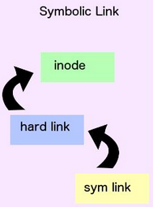

El nombre de un fichero debe tener entre 1 y 255 caracteres, excepto "/" que simboliza al raíz o para separar directorios y ficheros cuando se escribe una ruta. Los tipos de ficheros en Linux son muy importantes. Cualquier elemento físico (discos, impresoras, etc) o lógico (directorio, enlace, etc) se representa en Linux mediante un archivo, lo que facilita y estandariza la gestión de todos ellos. Podemos distinguir.
Todos los ficheros se identifican a través de un índice, denominado i-nodo que lo identifica en cada entrada de una tabla con una estructura de datos, en la que se guarda información de cada fichero, llamada tabla de i-nodos. Esta tabla se crea al arrancar el sistema. Cada i-nodo se identifica por un número.
Cada entrada en la tabla de i-nodos contiene la siguiente información:
- Número de i-nodo.Tipo de fichero.
- Propietario del grupo.
- Permisos o modo de acceso al fichero.
- Fecha de creación, acceso y modificación.
- Vínculos o enlaces.
1. Directorios o carpetas.
Almacenan en su bloque de datos el número de i-nodo y el nombre de los archivos que contiene. Cuando son listados con el comando ls muestra la información accediendo a la estructura interna de cada i-nodo.
2. Enlaces duros y blandos.
| Los enlaces duros son asociaciones de nombres de ficheros a i-nodos. Es decir, se trata de reutilizar un i-nodo asignándole nombres distintos y localizándose en diferentes directorios o en el mismo. | |
| Los enlaces blandos, lo que contiene un enlace simbólico, almacena un nuevo i-nodo (diferente al i-nodo con el archivo que enlaza) y un nombre de fichero. |  |
3. Archivo regular.
Son ficheros ordinarios que contienen información de diversa naturaleza. Dentro de ellos se incluyen los ficheros ejecutables, que tiene activo algún permiso de ejecución y contienen código ejecutable.
4. Dispositivos por caracter.
son aquellos que no disponen de sistema de archivos, como impresoras, teclados, terminales de texto, etc. Transfieren los datos carácter a carácter.
5. Dispositivos por bloques.
Almacenan la información en bloques de datos físicamente, como discos duros, cintas magnéticas, unidades flash, etc.
Resumen de siglas que identifica a cada tipo de archivo.